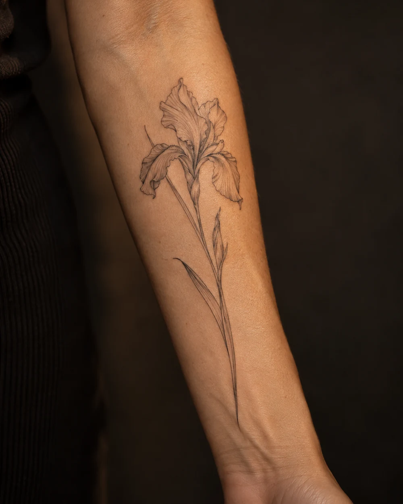
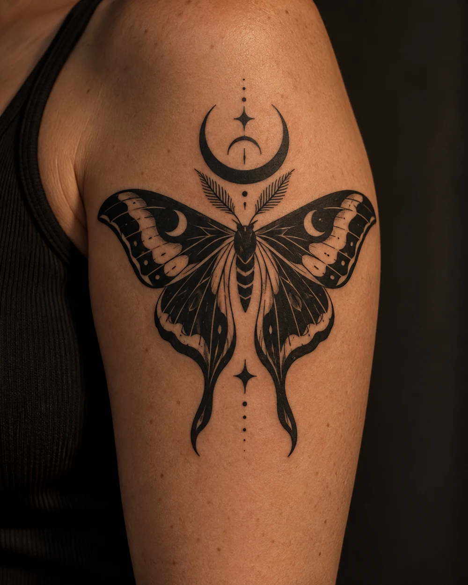
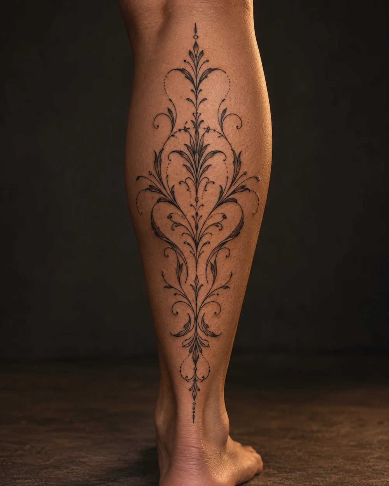

IMPERATRIZ / UNIVERSO TATTOO
Um traço.
Muitas expressões.
Explore uma linguagem.
Imagine a sua peça.
Explore referências por estilo e partilhe o que mais se aproxima da sua ideia.
Percorrer as referências ↓3 referências

01 / TRAÇO FINO
O detalhe em silêncio.
Íris botânica
Linhas delicadas e espaço entre os traços. Uma referência para explorar uma composição botânica leve.
Antebraço · preto
Quero explorar este estilo ↗
02 / BLACKWORK
A força do contraste.
Mariposa lunar
Áreas de preto sólido e pele em negativo. Uma referência de composição gráfica com presença.
Braço · preto
Quero explorar este estilo ↗
03 / ORNAMENTAL
Desenhado para acompanhar.
Ritmo vegetal
Curvas, simetria e prolongamentos. Uma referência para conversar sobre o desenho em relação ao corpo.
Perna · preto
Quero explorar este estilo ↗O PRÓXIMO TRAÇO É SEU